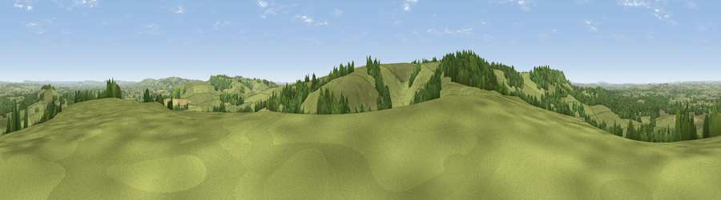

Viewpoint near Buckland Newton
#9096 in England · top 21% of its area beats it · near Buckland Newton · path 78 mWhere it is
The exact computed spot (ST 67950 05000). Click the marker for map links.
Public access: the nearest public right of way is about 78 m away — the final stretch may cross private land. Computed from Natural England's CRoW access layer and OpenStreetMap rights of way — not the legal definitive map. Always verify locally.
The view, rendered

A 360° render of this exact spot computed from the terrain model, tree cover and land cover — summer colours, afternoon light, calibrated against photographs of famous viewpoints. Real trees, hedges and buildings will differ in detail.
The panorama
Grey silhouette: terrain skyline in each direction (720 bearings, Earth curvature and refraction included). Dashed green: skyline with trees (+15 m) and buildings (+8 m) as obstacles. Blue strip: how far the ground is visible on each bearing.
Where the view opens
Wedge length = distance to the farthest visible ground on that bearing (vegetation-aware). Rings at 10, 25 and 50 km.
What fills the view
68% grassland · 22% woodland · 9% cropland
Angular shares of the visible panorama (visual magnitude), not map area. Landscape diversity 0.36 (0–1 Shannon).
Key numbers
More beautiful places nearby
The staircase of upgrades: each row has a higher view potential than everything closer. Driving times are estimates from straight-line distance, calibrated against real road routing — check an actual route before setting out.
| Place | Direction | Drive | Score |
|---|---|---|---|
| Watts Hill [Giant Hill] | SSW · 2 km | ~4 min | 67.5 |
| Viewpoint near Hilfield | W · 3 km | ~8 min | 71.6 |
| Viewpoint near Woolland | E · 9 km | ~18 min | 74.5 |
| Viewpoint near North Poorton | WSW · 16 km | ~28 min | 75.4 |
| Eggardon Hill | SW · 17 km | ~30 min | 80.3 |
| Viewpoint near Askerswell | SW · 17 km | ~30 min | 81.7 |
| Viewpoint near Portesham | SSW · 19 km | ~32 min | 82.7 |
| Viewpoint near West Bexington | SSW · 22 km | ~37 min | 88.8 |
50.84363, -2.45658 · source: screening · position refined by local search. Computed location — check access rights before visiting.